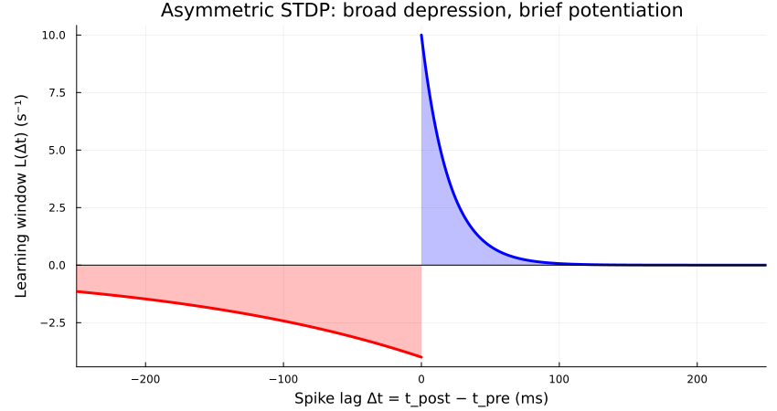
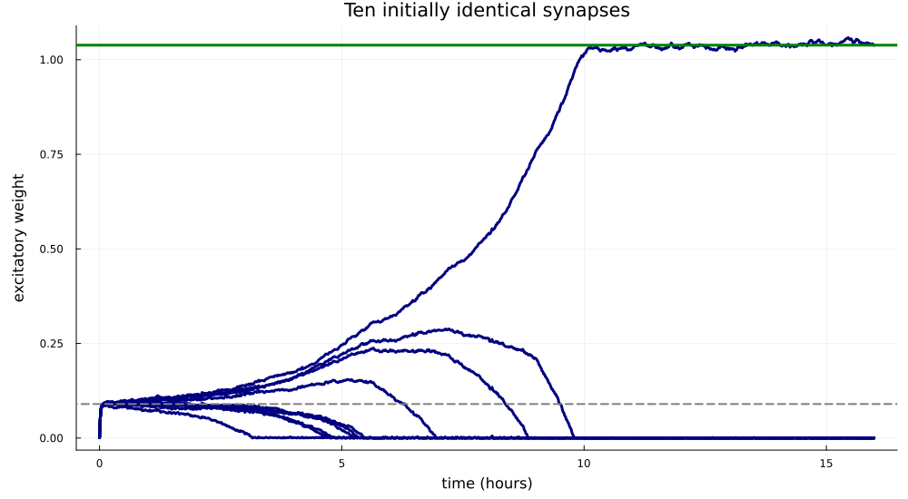
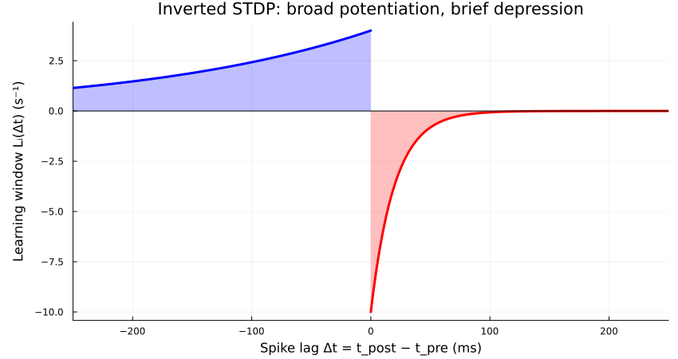
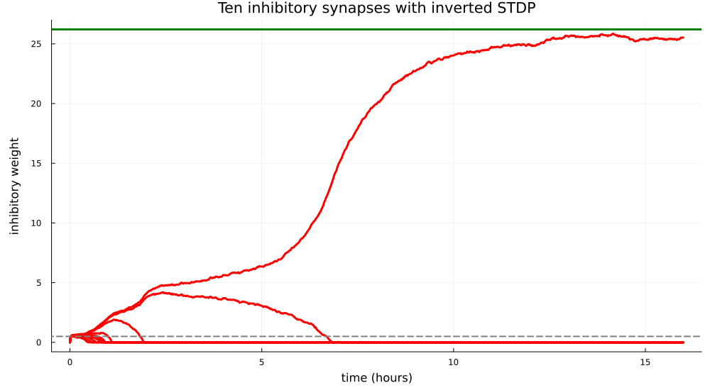

Winner-take-all self-stabilizing plasticity
Excitatory winner-take-all
Ten independent excitatory neurons fire at 50 Hz and project to one postsynaptic neuron with a nominal target of 50 Hz. Its external drive is only 5 Hz. All ten plastic weights start at 0.001; there is no feedback or recurrent connectivity. Spike fluctuations break the initial symmetry.
Run from the repository with the documentation environment:
julia --project=docs docs/literate/07_winner_take_all_self_stabilizing_plasticity.jlTimes are in seconds, rates in Hz, and weights are integrated kernel strengths.
using Random
using HawkesPlasticNetworks
const H = HawkesPlasticNetworks
const N = 10
const r_pre = 50.0
const r_target = 50.0
const h_post = r_target/10
const τ_syn = 30e-3
const τ_plus = 20e-3
const γ = 10.0
const τ_minus = γ*τ_plus
const A_plus = 0.2
const A_minus = 0.8
const B = A_plus-A_minus
const η = 1e-6
const αpre = -B*r_target
const αpost = 0.0
const weight_start = 0.001
const simulation_duration = 16*3600.0
const recording_interval = 60.0
const shared_weight_target = (r_target-h_post)/(N*r_pre)
const M = A_plus/(τ_syn+τ_plus)
const winner_weight = (αpre+B*h_post)/(-B*r_pre-M)
const winner_rate = h_post+r_pre*winner_weight;STDP kernel
This is the asymmetric STDP window used in the simulation, with the overall learning rate $\eta=10^{-6}$ factored out. For $\Delta t=t_{\mathrm{post}}-t_{\mathrm{pre}}$, causal pairs potentiate and reverse-order pairs depress:
\[L(\Delta t)= \begin{cases} -\dfrac{0.8}{0.2}\exp(\Delta t/0.2), & \Delta t<0,\\[4pt] \dfrac{0.2}{0.02}\exp(-\Delta t/0.02), & \Delta t>0. \end{cases}\]
Depression lasts ten times longer and has four times the area of potentiation. The integrated window is $B=A_+-A_-=-0.6$. The plot uses milliseconds.
using Plots
negative_lags = range(-6τ_minus,0.0;length=1201)
positive_lags = range(0.0,6τ_minus;length=1201)
depression = @. -A_minus/τ_minus*exp(negative_lags/τ_minus)
potentiation = @. A_plus/τ_plus*exp(-positive_lags/τ_plus)
stdp_figure = plot(
1000 .* negative_lags,depression;
color=:red,fillrange=0,fillalpha=0.25,linewidth=3,label=false,
xlabel="Spike lag Δt = t_post − t_pre (ms)",
ylabel="Learning window L(Δt) (s⁻¹)",
title="Asymmetric STDP: broad depression, brief potentiation",
xlims=(-250,250),legend=false,size=(850,450),
left_margin=6Plots.mm,bottom_margin=3Plots.mm)
plot!(stdp_figure,1000 .* positive_lags,potentiation;
color=:blue,fillrange=0,fillalpha=0.25,linewidth=3,label=false)
hline!(stdp_figure,[0.0];color=:black,linewidth=1,label=false);
stdp_figure
Rate regulation and competition
With $\alpha_{\mathrm{pre}}=-B r_{\mathrm{target}}=30$ and $\alpha_{\mathrm{post}}=0$, a first-order approximation gives
\[\langle\dot w_i\rangle\approx\eta r_{\mathrm{pre}} \left[B(r_{\mathrm{post}}-r_{\mathrm{target}})+M w_i\right], \qquad M=\frac{A_+}{\tau_{\mathrm{syn}}+\tau_+}=4\,\mathrm{s}^{-1}.\]
The negative $B$ regulates total excitation. The causal term $M w_i$ favors stronger synapses, amplifying differences until weaker weights approach zero. Here $|B|r_{\mathrm{pre}}>M$, so total excitation remains stable even with a single active synapse. Correlations can shift the learned rate above the nominal target. The difference timescale is about 1.39 hours; we run for 16.
Once only one synapse remains, $r_{\mathrm{post}}=h+r_{\mathrm{pre}}w$. Setting its rate and causal-correlation drift to zero gives
\[0=\alpha_{\mathrm{pre}}+Bh+(Br_{\mathrm{pre}}+M)w_*, \qquad w_* = \frac{\alpha_{\mathrm{pre}}+Bh}{-Br_{\mathrm{pre}}-M} = \frac{27}{26}\approx1.03846.\]
This slow-learning fixed point is stable because $Br_{\mathrm{pre}}+M=-26<0$. Its predicted postsynaptic rate is $h+r_{\mathrm{pre}}w_*\approx56.92$ Hz. The rule is self-regulating: no upper weight saturation is needed, only the nonnegative lower bound.
Build the feedforward network
In post <- pre order, the plastic matrix has one row and ten columns. The presynaptic population has constant input and no incoming connections. Weights stay nonnegative with no upper cap. Their nonzero initialization keeps all ten synapses eligible for plasticity, including after reaching zero.
function simulate_competition(;
simulation_duration::Real=simulation_duration,
recording_interval::Real=recording_interval,seed::Integer=0)
Random.seed!(seed)
population_post = H.PopulationExpKernelExcitatory(1,τ_syn;label="post")
population_pre = H.PopulationExpKernelExcitatory(N,τ_syn;label="pre")
weights = fill(weight_start,1,N)
rule = H.PlasticityAsymmetricSTDP(
η,B,αpre,αpost,τ_plus,γ,weights;weight_min=0.0)
connection = H.ConnectionWithWeights(
population_post,weights,population_pre;plasticity_rules=(rule,))
connected_post = H.ConnectedPopulationExpKernel(
population_post,[h_post],(connection,population_pre))
connected_pre = H.ConnectedPopulationExpKernel(
population_pre,fill(r_pre,N))
recorder_weights = H.WeightMatrixRecorder(
connection.weights,recording_interval,simulation_duration)
recorder_post = H.RecorderPopulationRate(
population_post,simulation_duration;Δt=recording_interval)
recorder_pre = H.RecorderPopulationRate(
population_pre,simulation_duration;Δt=recording_interval)
network = H.RecurrentNetworkExpKernel(
(connected_post,connected_pre),
(recorder_weights,recorder_post,recorder_pre))
H.reset!(network)
H.reset!(rule)
initial_weights = copy(connection.weights)
time_now = 0.0
while time_now < simulation_duration
time_now = H.dynamics_step!(time_now,network)
end
# Weight snapshots are event-triggered; keep their own time vector.
# Prepend the exact initial state rather than assigning it a spike time.
content_weights = H.get_content(recorder_weights)
content_post = H.get_content(recorder_post)
content_pre = H.get_content(recorder_pre)
return (
weight_times=vcat(0.0,content_weights.times),
weights=vcat(initial_weights,content_weights.weights[:,1,:]),
final_weights=copy(connection.weights),
rate_times=content_post.times,rates_post=content_post.rates,
rates_pre=content_pre.rates,
final_input_pre=copy(connected_pre.input),
final_input_post=copy(connected_post.input),
weight_min=rule.weight_min,weight_max=rule.weight_max)
end;Run the network and follow the ten weights
Navy curves show the ten weights; the green line marks the single-winner fixed point $w_*\approx1.03846$. The gray dashed line marks equal sharing at the nominal target: $(r_{\mathrm{target}}-h)/(Nr_{\mathrm{pre}})=0.09$.
result = simulate_competition()
weight_figure = plot(
result.weight_times./3600,result.weights;
color=:navy,linewidth=3,label=false,legend=false,
xlabel="time (hours)",ylabel="excitatory weight",
title="Ten initially identical synapses",
size=(1000,550),left_margin=6Plots.mm,bottom_margin=4Plots.mm)
hline!(weight_figure,[winner_weight];
color=:green,linewidth=3,label=false)
hline!(weight_figure,[shared_weight_target];
color=:gray,linestyle=:dash,linewidth=2,label=false);
weight_figure
Inhibitory winner-take-all
Ten independent inhibitory neurons now fire at 10 Hz, with constant external inputs and no connections from E. The postsynaptic drive remains 100 Hz, above the 50 Hz target: inhibition must remove the excess activity. The initial weights, recording interval, and 16-hour duration are unchanged.
const r_I = 10.0
const η_inhibitory = 4e-5
const B_inhibitory = 0.6
const αpre_inhibitory = -B_inhibitory*r_target
const h_post_inhibitory = 2*r_target
const A_left_inhibitory = (1+B_inhibitory)/2
const A_right_inhibitory = (1-B_inhibitory)/2
const M_inhibitory = A_right_inhibitory/(τ_syn+τ_plus)
const shared_target_inhibitory = (h_post_inhibitory-r_target)/(N*r_I);Inhibitory STDP kernel
Invert the asymmetric window: post-before-pre pairs potentiate over 200 ms, while pre-before-post pairs depress over 20 ms. The positive left area is 0.8 and the negative right area is 0.2, giving integrated area $B=0.6$. Negative $\alpha_{\mathrm{pre}}=-30$ balances that positive rate bias. inverted=true changes the timing signs while keeping B equal to the area:
\[L_I(\Delta t)= \begin{cases} \dfrac{0.8}{0.2}\exp(\Delta t/0.2), & \Delta t<0,\\[4pt] -\dfrac{0.2}{0.02}\exp(-\Delta t/0.02), & \Delta t>0. \end{cases}\]
inhibitory_stdp_figure = plot(
1000 .* negative_lags,
A_left_inhibitory/τ_minus .* exp.(negative_lags./τ_minus);
color=:blue,fillrange=0,fillalpha=0.25,linewidth=3,label=false,legend=false,
xlabel="Spike lag Δt = t_post − t_pre (ms)",
ylabel="Learning window Lᵢ(Δt) (s⁻¹)",
title="Inverted STDP: broad potentiation, brief depression",
xlims=(-250,250),size=(850,450),
left_margin=6Plots.mm,bottom_margin=3Plots.mm)
plot!(inhibitory_stdp_figure,1000 .* positive_lags,
-A_right_inhibitory/τ_plus .* exp.(-positive_lags./τ_plus);
color=:red,fillrange=0,fillalpha=0.25,linewidth=3,label=false)
hline!(inhibitory_stdp_figure,[0.0];color=:black,linewidth=1,label=false);
inhibitory_stdp_figure
Regulation and competition
Stronger inhibition suppresses causal postsynaptic spikes and therefore receives less timing-dependent depression. The causal coefficient is now positive, $M_I=0.2/(\tau_{\mathrm{syn}}+\tau_+)=4\,\mathrm{s}^{-1}$:
\[\langle\dot w_i\rangle\approx\eta_I r_I \left[B(r_E-r_{\mathrm{target}})+M_Iw_i\right], \qquad r_E\approx h_E-r_I\sum_i w_i.\]
Above target inhibition strengthens; below target it weakens. Meanwhile, differences grow as $d(w_i-w_j)/dt=\eta_I r_IM_I(w_i-w_j)$: fluctuations select stronger synapses instead of being averaged away. The sum is stable in this approximation when $NBr_I>M_I$. We impose only a zero lower bound; no upper weight saturation is needed because the rate feedback is self-regulating. At 10 Hz, $\eta_I=4\times10^{-5}$ gives a difference timescale of about 10.4 minutes. Strong single inhibitory inputs can rectify E, so the linear approximation does not give a reliable numerical single-winner weight at this low input rate.
Single-winner estimate with rate rectification
For one surviving input, retain the clipped intensity $[h_E-wx_I]_+$. Set $q=r_I\tau_{\mathrm{syn}}$, $a=\tau_{\mathrm{syn}}/\tau_+$, and $z=h_E\tau_{\mathrm{syn}}/w$. For $z<1$, averaging over the stationary Poisson-driven exponential trace gives
\[r_E(w)=Kz^q,\qquad K=\frac{h_Ee^{-\gamma_{\mathrm{Euler}}q}}{\Gamma(q+2)}, \qquad C=a\,\mathrm{Beta}(a,q+2).\]
The broad positive lobe samples the mean rate, while the short negative lobe samples the rate after an inhibitory spike. The resulting drift equation is
\[0=\alpha_{\mathrm{pre}}+Kz^q\left[A_{\mathrm{left}}- A_{\mathrm{right}}Cz^a\right],\qquad w_*\approx26.21,\quad r_E^*\approx37.62\,\mathrm{Hz}.\]
Solve this scalar equation by bisection. This is a slow-learning estimate with one fixed synapse; it includes rate clipping but neglects losing weights and fluctuations of the winning weight.
using SpecialFunctions: gamma, beta
function inhibitory_single_winner_prediction()
q = r_I*τ_syn
a = τ_syn/τ_plus
K = h_post_inhibitory*exp(-Float64(Base.MathConstants.eulergamma)*q)/gamma(q+2)
C = a*beta(a,q+2)
if αpre_inhibitory >= 0.0
throw(ArgumentError("the single-winner estimate requires negative αpre"))
end
if αpre_inhibitory+K*(A_left_inhibitory-A_right_inhibitory*C) < 0.0
throw(ArgumentError("this estimate requires a fixed point with w ≥ h_E*τ_syn"))
end
lower = 0.0
upper = 1.0
for _ in 1:100
z = (lower+upper)/2
drift = αpre_inhibitory+K*z^q*(A_left_inhibitory-A_right_inhibitory*C*z^a)
if drift > 0.0
upper = z
else
lower = z
end
end
z = (lower+upper)/2
return (weight=h_post_inhibitory*τ_syn/z,rate=K*z^q)
end;Build the inhibitory feedforward network
The E <- I matrix is plastic. I has only constant external input: there is no reciprocal connection and no adaptive-input callback.
function simulate_inhibitory_competition(;
inhibitory_rate::Real=r_I,learning_rate::Real=η_inhibitory,
simulation_duration::Real=simulation_duration,
recording_interval::Real=recording_interval,
seed::Integer=0)
Random.seed!(seed)
population_e = H.PopulationExpKernelExcitatory(1,τ_syn;label="e")
population_i = H.PopulationExpKernelInhibitory(N,τ_syn;label="i")
weights = fill(weight_start,1,N)
rule = H.PlasticityAsymmetricSTDP(
learning_rate,B_inhibitory,αpre_inhibitory,αpost,τ_plus,γ,weights;
weight_min=0.0,inverted=true)
connection_ei = H.ConnectionWithWeights(
population_e,weights,population_i;plasticity_rules=(rule,))
connected_e = H.ConnectedPopulationExpKernel(
population_e,[h_post_inhibitory],(connection_ei,population_i))
connected_i = H.ConnectedPopulationExpKernel(
population_i,fill(Float64(inhibitory_rate),N))
recorder_weights = H.WeightMatrixRecorder(
connection_ei.weights,recording_interval,simulation_duration)
recorder_e = H.RecorderPopulationRate(
population_e,simulation_duration;Δt=recording_interval)
recorder_i = H.RecorderPopulationRate(
population_i,simulation_duration;Δt=recording_interval)
network = H.RecurrentNetworkExpKernel(
(connected_e,connected_i),
(recorder_weights,recorder_e,recorder_i))
H.reset!(network)
H.reset!(rule)
initial_weights = copy(connection_ei.weights)
time_now = 0.0
while time_now < simulation_duration
time_now = H.dynamics_step!(time_now,network)
end
content_weights = H.get_content(recorder_weights)
content_e = H.get_content(recorder_e)
content_i = H.get_content(recorder_i)
return (
weight_times=vcat(0.0,content_weights.times),
weights=vcat(initial_weights,content_weights.weights[:,1,:]),
final_weights=copy(connection_ei.weights),
rate_times=content_e.times,rates_post=content_e.rates,rates_pre=content_i.rates,
final_input_pre=copy(connected_i.input),
final_input_post=copy(connected_e.input),
weight_min=rule.weight_min,weight_max=rule.weight_max)
end;Run the inhibitory network
Red curves show the ten inhibitory weights; green marks the clipping-aware single-winner estimate $w_*\approx26.21$. The gray dashed line is the nominal equal-sharing reference $(h_E-r_{\mathrm{target}})/(Nr_I)=0.5$.
prediction_inhibitory = inhibitory_single_winner_prediction()
result_inhibitory = simulate_inhibitory_competition()
inhibitory_weight_figure = plot(
result_inhibitory.weight_times./3600,result_inhibitory.weights;
color=:red,linewidth=3,label=false,legend=false,
xlabel="time (hours)",ylabel="inhibitory weight",
title="Ten inhibitory synapses with inverted STDP",
size=(1000,550),left_margin=6Plots.mm,bottom_margin=4Plots.mm)
hline!(inhibitory_weight_figure,[prediction_inhibitory.weight];
color=:green,linewidth=3,label=false)
hline!(inhibitory_weight_figure,[shared_target_inhibitory];
color=:gray,linestyle=:dash,linewidth=2,label=false);
inhibitory_weight_figure
This page was generated using Literate.jl.